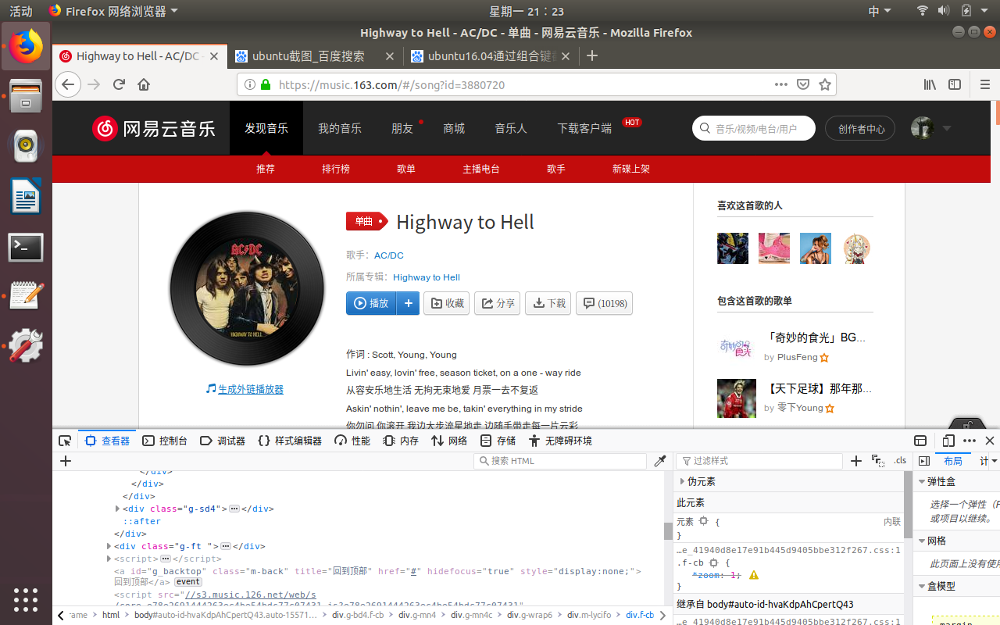
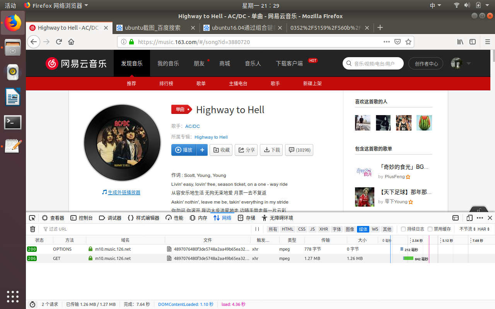
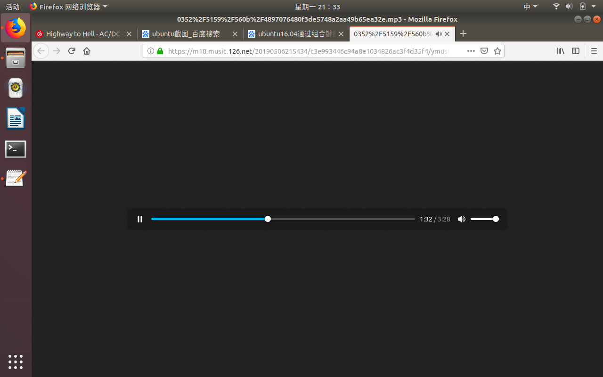
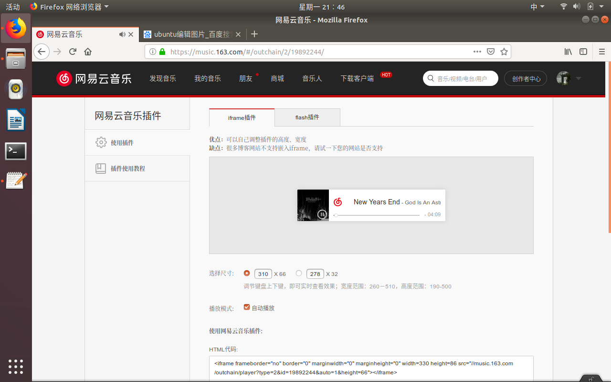
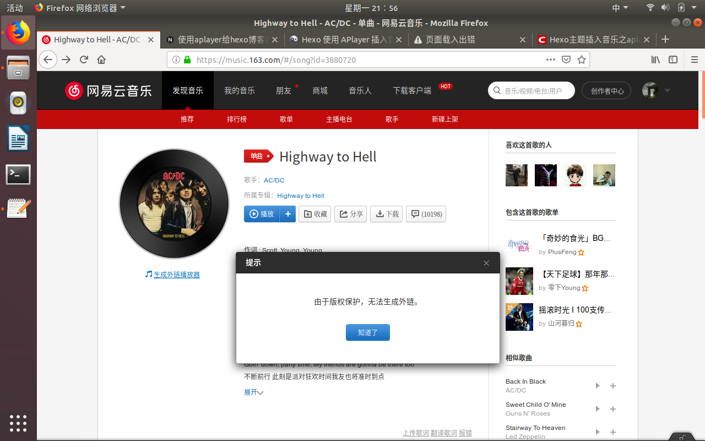

这篇文章我主要是想写写我在听音乐过程中所遇到的一些问题。感觉写成好几篇文章太过于麻烦，所以我索性全写到一篇文章中，以后若是遇到自然也会在此文章中更新。
以下是本文的内容所涵盖的几点：
- Linux里firefox无法播放音乐
- 网易云音乐付费音乐免费下载
- Hexo博客添加音乐
ubuntu里firefox无法播放音乐
我在ubuntu环境下时一般使用RhythmBox播放本地音乐，而且也很少在此环境下看视频，所以我很少用浏览器播放音频和视频。但是有时候是必须用到浏览器播放，就像是下文所讲的下载付费音乐。然而当我第一次在ubuntu的firefox上打开网易云音乐网页版播放音乐时却发现无法播放。网上一查，大抵上是解码器不支持的缘故。幸运的是这个问题也好解决，安装个解码器即可。1
sudo apt-get install ubuntu-restricted-extras
网易云音乐付费音乐免费下载
这个方法只对可以在网页端听的音乐有用。
- 进入歌曲页面，按下F2查看元素。
 - 点击
网络(network)，并且选择媒体(media)，然后按ctrl+R重新载入。
 - 在ubuntu中，选择大小最大的那一项，即上述图片中的第二项。右键，点击
新建标签页打开，然后切换到新生成的页面中。

在windows中，需要先播放音乐，然后再选择大小最大的那一项，双击并切换得到新生成的页面中（也可能是浏览器的原因，我两个系统的浏览器不同）。 - 右键中间的进度条，点击
另存音频为，即可保存歌曲。windows
Hexo博客中添加音乐
使用音乐平台提供的外链
以网易云音乐为例：
- 进入所需歌曲的页面，点击
生成外链播放器。
 - 一般添加的是iframe标签，调节完尺寸和播放模式后，复制最低端的HTML代码，添加到自己的博客文章中。
1
<iframe frameborder="no" border="0" marginwidth="0" marginheight="0" width=330 height=86 src="//music.163.com/outchain/player?type=2&id=19892244&auto=0&height=66"></iframe>
效果如下：
使用aplayer播放
上述引用音乐平台外链的方法可以说是非常的方便了，只要获取代码添加一下即可。
然而对于一些老爵士、老摇滚和其他有版权保护的音乐是没办法添加外链的。

网上虽然有如何获取这些歌曲外链的方法，但是我试过两次后，发现只能出现播放器，却无法播放。所以为了一劳永逸，我选择使用aplayer。
aplayer是一款音乐播放插件，即html5的嵌入式播放器，只要有歌曲的id即可。
安装aplayer插件
1
npm install --save hexo-tag-aplayer
使用MetingJS
MetingJS 是基于Meting API 的 APlayer 衍生播放器，引入 MetingJS 后，播放器将支持对于 QQ音乐、网易云音乐、虾米、酷狗、百度等平台的音乐播放。
上述是从别人博客里引用的关于MetingJS的介绍以及功能。
使用MetingJS需要在根目录下的_config.yml文件中添加以下语句：1
2aplayer:
meting: true
- 添加代码
准备工作完成了，接下来你只需要在你想加音乐的博客文章中添加以下代码即可：1
{% meting "3880720" "netease" "song" "theme:#555" "mutex:true" "listmaxheight:340px" "preload:auto" %}
效果如下：
其中3880720是歌曲的id，可以在该歌曲页面的网址中找到。
这份代码中的各个参数配置如下：
| 选项 | 默认值 | 描述 |
|---|---|---|
| id | 必须值 | 歌曲/专辑/歌单对应的id |
| server | 必须值 | 音乐平台：netease(网易云音乐)、tecent(qq音乐)、xiami(虾米音乐)、kugou(酷狗音乐)、baidu(百度音乐) |
| type | 必须值 | 请求类型：song(单曲)、album(专辑)、playlist(歌单)、search(搜索)、artist(歌手) |
| theme | #ad7a86 | 播放器风格色彩设置 |
| fixed | false | 开启固定模式 |
| mini | false | 开启迷你模式 |
| loop | all | 列表循环模式：all, one,none |
| order | list | 列表播放模式： list(顺序播放), random(随机播放) |
| volume | 0.7 | 播放器音量 |
| lrctype | 0 | 歌词格式类型 |
| listfolded | false | 指定音乐播放列表是否折叠 |
| storagename | metingjs | LocalStorage 中存储播放器设定的键名 |
| autoplay | true | 自动播放，移动端浏览器暂时不支持此功能 |
| mutex | true | 该选项开启时，如果同页面有其他 aplayer 播放，该播放器会暂停 |
| listmaxheight | 340px | 播放列表的最大长度 |
| preload | auto | 音乐文件预载入模式，可选项： none, metadata, auto |